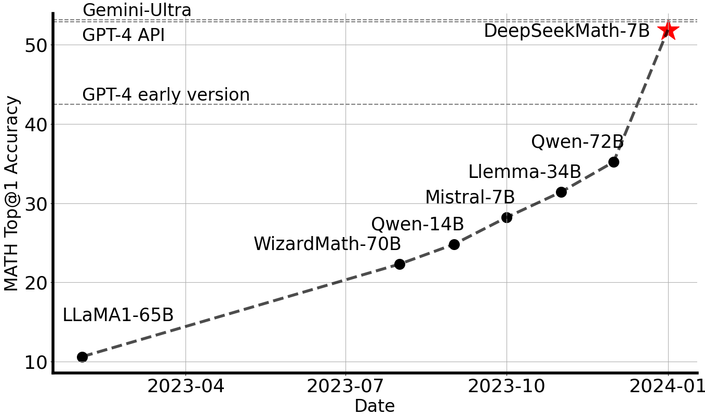
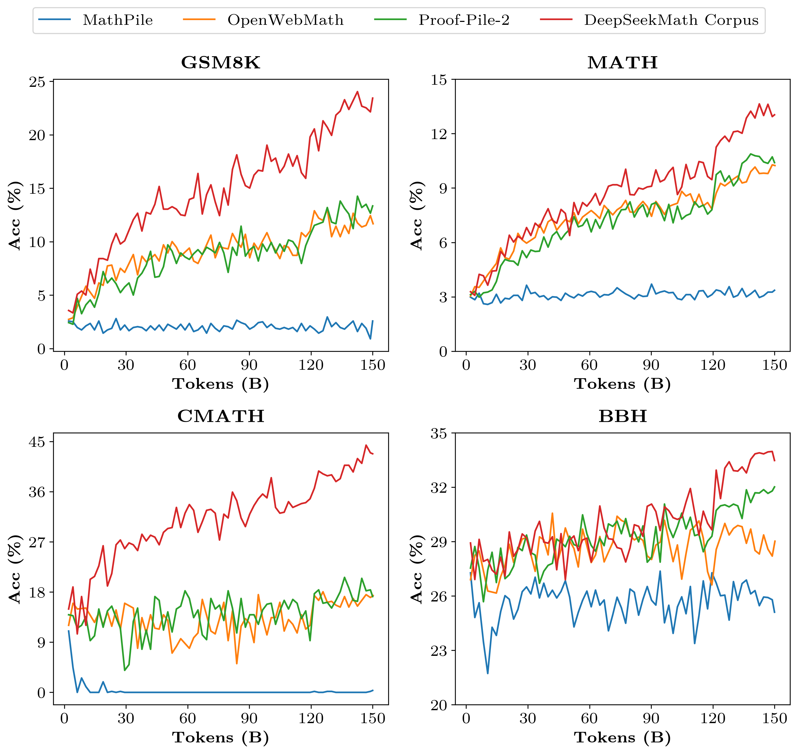

DeepSeekMath: Pushing the Limits of Mathematical
一句话总结:DeepSeekMath 7B 通过"高质量数学预训练语料(120B tokens / CC 抽取)+ SFT + GRPO RL"三段式,在 MATH 上做到 51.7%(64-sample Self-Consistency 60.9%),逼近 Gemini-Ultra / GPT-4;最具影响力的副产品是 Group Relative Policy Optimization (GRPO)——把 PPO 里那个和 policy 同体量的 value/critic 模型彻底去掉,用同一 prompt 下 G 条 rollouts 的组内 reward 做 z-score 归一 来当 advantage,显存与算力近乎砍半,稳定性与显式 KL 正则保留。
🎯 面试考点(高频):
-
GRPO 损失推导(必默写):对每个 prompt $q$ 从旧策略采样 $G$ 条 rollouts $\{o_i\}_{i=1}^G$,reward model 打分 $\{r_i\}$,先做 组内归一 得到 advantage $\hat A_{i,t} = \tilde r_i = (r_i - \mathrm{mean}(\mathbf{r})) / \mathrm{std}(\mathbf{r})$(outcome supervision 时所有 token 共享同一 $\tilde r_i$;process supervision 时 $\hat A_{i,t} = \sum_{\mathrm{index}(j) \ge t} \tilde r_i^{\,\mathrm{index}(j)}$)。优化目标为
$$\mathcal{J}_{\text{GRPO}}(\theta) = \mathbb{E}_{q,\,\{o_i\}\sim\pi_{\theta_{\text{old}}}}\!\Biggl[\frac{1}{G}\sum_{i=1}^{G}\frac{1}{|o_i|}\sum_{t=1}^{|o_i|}\Bigl(\min\!\bigl(\rho_{i,t}\hat A_{i,t},\,\mathrm{clip}(\rho_{i,t},1-\varepsilon,1+\varepsilon)\hat A_{i,t}\bigr) - \beta\,D_{\text{KL}}\!\bigl[\pi_\theta\,\|\,\pi_{\text{ref}}\bigr]\Bigr)\Biggr]$$
其中 $\rho_{i,t} = \pi_\theta(o_{i,t}\mid q, o_{i,
- vs PPO / REINFORCE:PPO 需要一个和 policy 同尺寸的
value head拟合 $V_\psi$ 做 GAE,显存/算力 ×2,且 LLM 只在末 token 给 reward,value 在 token 级难学准;GRPO 用组内均值代替 baseline、组内标准差代替方差归一,无需 critic、无需 GAE,本质上是带 KL 正则与重要度裁剪的"group-relative REINFORCE"。相对 REINFORCE,GRPO 多了 ratio clipping 与显式 KL,因此既保持 PPO 的稳定性,又拿掉了 value model。 - 为什么不需要 value function:① reward model 本身是用同问题不同答案的成对比较训出来的,天然是相对信号,group-relative advantage 与之同构;② LLM rollout 通常只在序列末打 reward,token-level value 训练困难,组内 baseline 反而无偏且方差小;③ 直接节省一份模型——这是 GRPO 在工业上被快速采纳的关键(DeepSeek-R1 / Qwen / Kimi 等都沿用)。
- KL 放在 loss 里、不放进 reward 里:PPO 习惯把 per-token KL 折进 reward $r_t = r_\phi - \beta\log(\pi_\theta/\pi_{\text{ref}})$ 再做 GAE;GRPO 直接把 $\beta D_{\text{KL}}$ 加到 loss 上,避免污染组内归一化后的 $\hat A_{i,t}$,数值更干净。
- Outcome vs Process Supervision:OS 把最终答案对错(或 reward model 末 token 分)广播到所有 token;PS 给每个推理步打分,advantage 是当前 token 之后所有 step 归一化奖励之和。论文里 GRPO+PS > GRPO+OS,体现细粒度 step-aware credit assignment 的收益。
- Iterative GRPO:把当前 policy rollout + rule-judge 形成新数据,加 10% replay 持续更新 reward model;再把新 policy 当新的 ref开下一轮——两轮就把 GSM8K 84%→88%、MATH 47%→52%。
- 实战超参(论文):每题采样 $G=64$ 条 rollouts,policy lr $1\text{e-}6$,reward model lr $2\text{e-}5$,$\beta = 0.04$,$\varepsilon$ 标准 PPO 0.2,batch 1024,每 exploration 只更 policy 一次(因此 $\pi_{\theta_{\text{old}}}=\pi_\theta$ 可在分析时近似)。
- 统一视角(必懂):论文给出 $\nabla_\theta \mathcal{J}_A = \mathbb{E}[\sum_t GC_A(q,o,t,\pi_{rf})\nabla_\theta \log\pi_\theta(o_t\mid \cdot)]$,SFT / RFT / Online RFT / DPO / PPO / GRPO 的差别只在 (Data Source, Reward Function, Gradient Coefficient) 三个分量——SFT 系数恒 1;RFT 系数为 $\mathbb{1}[\text{correct}]$(rule);DPO 系数为 sigmoid 偏好差;PPO/GRPO 系数为 advantage(model)。所以面试时一句话:"GRPO = Online RFT 把 0/1 系数换成 group-normalized reward + clip + KL"。
- RL 为什么有效?论文 §5.2.2 给出关键观察:RL 提升 Maj@K 但不提升 Pass@K——RL 没在补能力,而是把模型 TopK 中已经存在的正确解的概率往上推,本质是蒸馏式分布锐化 / robust decoding。这是 GRPO 论文最被引用的"祛魅"结论。
- 已知坑 / 后续工作:① reward hacking + 长度偏置:reward model 容易奖励冗长答案,后续 DAPO/GRPO-zero/Dr.GRPO 引入 length normalization、token-level loss、去掉 std 归一等修正;② std 归一会"惩罚高方差 prompt"——所有都答对/错的 group 没有梯度;③ $G$ 不能太小(论文用 64),小了 baseline 估计太噪声。
- Preamblep.1
- Abstractp.1
- §1 Introduction / 引言p.1
- §1.1 Contributions / 主要贡献p.2
- §1.2 Summary of Evaluations and Metrics / 评测综述p.3
- §2.1 Data Collection & Decontamination / 数学语料采集与去污染p.4
- §2.2 Validating Corpus Quality / 语料质量验证p.5
- §2.3 Training DeepSeekMath-Base 7B / 预训练基模p.7
- §3 Supervised Fine-Tuning / SFTp.10
- §4.1.1 From PPO to GRPO / 从 PPO 到 GRPOp.11
- §4.1.2-4 GRPO Outcome / Process / Iterativep.13
- §4.2 Training DeepSeekMath-RL / RL 训练与评估p.14
- §5.1 Lessons in Pre-Training / 预训练观察p.15
- §5.2.1 Unified Paradigm / RL 统一视角p.17
- §5.2.2-3 Why & How RL Works / RL 为何有效p.21
- §6 Conclusion / 结论与展望p.22
- References / 参考文献(略)p.23
🖼 图表速览 (5 张) · 点击放大

① 图说明:论文 Figure 1,横轴时间线(2023-04 ~ 2024-01),纵轴 MATH benchmark Top@1 accuracy。把当年主流开源数学模型按发布时间打点,顶部三条虚线是闭源 SOTA:GPT-4 early(~42)/ GPT-4 API(~52)/ Gemini-Ultra(~53)。红五角星标的 DeepSeekMath-7B 一脚踢到了 52% 量级。
② 关键数据:LLaMA1-65B ≈ 10%,WizardMath-70B ≈ 22%,Mistral-7B ≈ 28%,Llemma-34B ≈ 31%,Qwen-72B ≈ 35%;DeepSeekMath-7B ≈ 52%——以 7B 参数跨越了 70B 量级开源模型并打到闭源 GPT-4 同档。
③ 启示:"门面图",一图证明两件事——① 数学推理能力不是参数堆出来的,高质量数学预训练语料 + GRPO RL 比规模 ×10 更有效;② 在 2024 年初,开源 7B 第一次在 MATH 上突破 50%。这也是为什么这篇 paper 在 R1/o1 时代被反复提及——GRPO 作为算法基底登场。
① 图说明:装饰性 leaf-icon(论文里作为 section divider 出现,非数据图)。叶片轮廓里散布着 π、∂、∑、e、几何符号,象征"从自然语料中生长出来的数学语料"。
② 内容性图请看:fig_5(各语料训练曲线)与 fig_1(MATH 时间线)是真正承载论文 Figure 1/Figure 3 的图。这张 leaf 图对应论文 Section 2 的标题装饰。
③ 启示:解析器把 PDF 里的矢量装饰图当作图片抽出来了,可忽略其语义。如果做笔记可以跳过。
① 图说明:同样是装饰性 tree-icon——彩色数学符号(数字、+−×÷、π、根号)排列成一棵"知识树",对应论文里 Section 3 (SFT) / Section 4 (RL) 的章节扉页装饰。
② 内容性图请看:论文 Figure 4(PPO vs GRPO 架构对比)和 Figure 5(RFT / Online RFT / GRPO+OS / GRPO+PS 训练曲线)未被解析器抽出。如需 PPO/GRPO 框图,请翻原文 PDF p.13。
③ 启示:跳过即可。这张图对理解算法没有信息量。
① 图说明:装饰性 globe-icon——一个网格地球,呼应论文里强调"Common Crawl 是全球多语数学语料来源,中英文都包含"的叙事。
② 内容性图请看:真正承载多语数据贡献的是 Table 1(DeepSeekMath Corpus vs MathPile / OpenWebMath / Proof-Pile-2 在英中 8 个 benchmark 上的对比)和 fig_5 训练曲线。
③ 启示:跳过。论文 Section 2.1 的 Figure 2 (iterative pipeline 流程图)未被抽出,这是真正值得看的——展示 fastText 召回 → 域级人工标注 → 迭代 4 轮 → 35.5M pages / 120B tokens 的全过程。

① 图说明:论文 Figure 3,DeepSeek-LLM 1.3B 分别在四种数学语料(MathPile / OpenWebMath / Proof-Pile-2 / DeepSeekMath Corpus)上继续预训练 150B tokens,在 GSM8K / MATH / CMATH / BBH 四个 benchmark 上的 few-shot CoT 准确率随训练 token 量(0~150B)的变化曲线。红色 = DeepSeekMath Corpus,显著高于其它。
② 关键数据:训练 150B tokens 后:GSM8K(红 ≈ 23% vs 橙绿 ≈ 12%,蓝 ≈ 2%)、MATH(红 ≈ 13.6% vs 橙绿 ≈ 11%,蓝 ≈ 3%)、CMATH(红 ≈ 42% vs 橙绿 ≈ 18%,蓝 ≈ 0%——MathPile 中文基本没用,因为它 85% 是 arXiv 英文 paper)、BBH(红 ≈ 33% vs 其它 ≈ 28%——数学预训练对通用推理也有正迁移)。
③ 启示:三条:① 语料质量 > 语料尺寸(Proof-Pile-2 51.9B 不敌 DeepSeekMath 120B 的前 50B);② 多语必要:英文为主的 corpora 在中文 benchmark CMATH 上几乎没增益;③ arXiv 不够用:MathPile(85% arXiv)在所有 benchmark 上几乎贴地——这给后续 §5.1.2 "arXiv ineffective" 的结论铺了路。这是支撑全篇"为什么要自己造 DeepSeekMath Corpus"的核心证据图。
📖 论文正文(英文 / 中文双语逐段对照)
Preamblep.1
DeepSeekMath: Pushing the Limits of Mathematical Reasoning in Open Language Models — Zhihong Shao, Peiyi Wang, Qihao Zhu, Runxin Xu, Junxiao Song, Xiao Bi, Haowei Zhang, Mingchuan Zhang, Y.K. Li, Y. Wu, Daya Guo (DeepSeek-AI, Tsinghua University, Peking University). github.com/deepseek-ai/DeepSeek-Math
Abstractp.1
Mathematical reasoning poses a significant challenge for language models due to its complex and structured nature. In this paper, we introduce DeepSeekMath 7B, which continues pre-training DeepSeek-Coder-Base-v1.5 7B with 120B math-related tokens sourced from Common Crawl, together with natural language and code data. DeepSeekMath 7B has achieved an impressive score of 51.7% on the competition-level MATH benchmark without relying on external toolkits and voting techniques, approaching the performance level of Gemini-Ultra and GPT-4. Self-consistency over 64 samples from DeepSeekMath 7B achieves 60.9% on MATH. The mathematical reasoning capability of DeepSeekMath is attributed to two key factors: First, we harness the significant potential of publicly available web data through a meticulously engineered data selection pipeline. Second, we introduce Group Relative Policy Optimization (GRPO), a variant of Proximal Policy Optimization (PPO), that enhances mathematical reasoning abilities while concurrently optimizing the memory usage of PPO.
数学推理由于其复杂且高度结构化的特性,对语言模型构成了重大挑战。本文提出 DeepSeekMath 7B——以 DeepSeek-Coder-Base-v1.5 7B 为起点,继续在 120B 来自 Common Crawl 的数学相关 token 上预训练,并辅以自然语言与代码数据。在不使用任何外部工具与投票技巧的前提下,DeepSeekMath 7B 在竞赛级 MATH 基准上取得了 51.7% 的成绩,逼近 Gemini-Ultra 与 GPT-4;在 64 条采样上做 Self-Consistency 则达到 60.9%。DeepSeekMath 的数学能力归功于两件事:① 通过精心设计的数据筛选流水线,我们充分挖掘了公开 Web 数据中的数学价值;② 提出 Group Relative Policy Optimization (GRPO)——一种 PPO 的变体,在增强数学推理能力的同时显著降低了 PPO 的显存占用。
§1 Introduction / 引言p.1
Large language models (LLM) have revolutionized the approach to mathematical reasoning in artificial intelligence, spurring significant advancements in both the quantitative reasoning benchmark and the geometry reasoning benchmark. Moreover, these models have proven instrumental in assisting humans in solving complex mathematical problems. However, cutting-edge models such as GPT-4 and Gemini-Ultra are not publicly available, and the currently accessible open-source models considerably trail behind in performance. In this study, we introduce DeepSeekMath, a domain-specific language model that significantly outperforms the mathematical capabilities of open-source models and approaches the performance level of GPT-4 on academic benchmarks. To achieve this, we create the DeepSeekMath Corpus, a large-scale high-quality pre-training corpus comprising 120B math tokens. This dataset is extracted from the Common Crawl (CC) using a fastText-based classifier.
大语言模型彻底改变了 AI 做数学推理的方式,推动了定量推理(如 MATH)与几何推理基准的进展,也在辅助人类解决复杂数学问题方面发挥了作用。然而,前沿模型 GPT-4、Gemini-Ultra 都是闭源的,目前可用的开源模型在性能上远远落后。本文引入 DeepSeekMath——一个领域专用语言模型,在数学能力上显著超越所有开源模型,并在学术基准上接近 GPT-4 的水平。为此我们构建了 DeepSeekMath Corpus:一个由 120B 数学 token 组成的大规模高质量预训练语料,通过 fastText 分类器从 Common Crawl 中抽取。
In the initial iteration, the classifier is trained using instances from OpenWebMath as positive examples and a diverse selection of other web pages as negatives. We then employ the classifier to mine additional positive instances from the CC, which are further refined through human annotation, and the classifier is updated with this enhanced dataset. The evaluation results indicate that the large-scale corpus is of high quality: our base model DeepSeekMath-Base 7B achieves 64.2% on GSM8K and 36.2% on the competition-level MATH dataset, outperforming Minerva 540B. The DeepSeekMath Corpus is multilingual, so we also notice improvements on Chinese mathematical benchmarks. DeepSeekMath-Base is initialized with DeepSeek-Coder-Base-v1.5 7B, as we notice that starting from a code training model is a better choice compared to a general LLM. Furthermore, math training also improves model capability on MMLU and BBH benchmarks, indicating it enhances not only mathematical abilities but also general reasoning.
第一轮迭代中,分类器以 OpenWebMath 中的样本作为正例,以 CC 中的多样化网页作为负例进行训练;随后用该分类器从 CC 中召回更多正例,再经人工标注精修,并以此更新数据反过来改进分类器。评测结果表明该大规模语料质量很高:基模 DeepSeekMath-Base 7B 在 GSM8K 上拿到 64.2%、在竞赛级 MATH 上拿到 36.2%,超过了 Minerva 540B。语料本身多语种,因此中文数学基准也得到提升。DeepSeekMath-Base 从 代码模型 DeepSeek-Coder-Base-v1.5 7B 初始化——我们发现从代码模型起步比从通用 LLM 起步更好。此外,数学训练也提升了 MMLU 与 BBH 上的表现,说明它不仅增强数学能力,也放大了通用推理能力。
After pre-training, we apply mathematical instruction tuning to DeepSeekMath-Base with chain-of-thought, program-of-thought, and tool-integrated reasoning data. The resulting model DeepSeekMath-Instruct 7B beats all 7B counterparts and is comparable with 70B open-source instruction-tuned models. Furthermore, we introduce the Group Relative Policy Optimization (GRPO), a variant reinforcement learning algorithm of Proximal Policy Optimization (PPO). GRPO foregoes the critic model, instead estimating the baseline from group scores, significantly reducing training resources. By solely using a subset of English instruction-tuning data, GRPO obtains a substantial improvement over the strong DeepSeekMath-Instruct: in-domain GSM8K 82.9% → 88.2%, MATH 46.8% → 51.7%, and out-of-domain CMATH 84.6% → 88.8%. We also provide a unified paradigm that subsumes RFT, DPO, PPO, and GRPO as direct or simplified RL techniques, and conduct extensive experiments to investigate the essential elements of this paradigm.
预训练后,我们用 chain-of-thought (CoT)、program-of-thought (PoT) 与 tool-integrated reasoning 三种格式的数据,对 DeepSeekMath-Base 做数学指令微调,得到 DeepSeekMath-Instruct 7B——压过所有 7B 对手,可与 70B 开源 instruction-tuned 模型抗衡。更进一步,我们提出 Group Relative Policy Optimization (GRPO):PPO 的一种变体,放弃 critic 模型,直接用同一 prompt 下一组采样的组内分数估计 baseline,从而显著降低训练资源。仅用一个子集做 RL,GRPO 就将 DeepSeekMath-Instruct 大幅提升——in-domain:GSM8K 82.9% → 88.2%、MATH 46.8% → 51.7%;out-of-domain:CMATH 84.6% → 88.8%。我们还给出一个统一范式,将 RFT、DPO、PPO 与 GRPO 都视作"直接或简化版 RL",并通过大量实验研究其关键要素。
§1.1 Contributions / 主要贡献p.2
Math Pre-Training at Scale. Our research shows that publicly accessible Common Crawl data contains valuable mathematical information. With a carefully designed pipeline, we construct DeepSeekMath Corpus, a 120B-token math corpus filtered from the web — almost 7× the size of Minerva's math web pages and 9× OpenWebMath. Our pre-trained base DeepSeekMath-Base 7B reaches Minerva 540B-level performance, demonstrating that parameter count is not the only key factor for mathematical reasoning. Code training prior to math training improves models' ability to solve mathematical problems both with and without tool use — offering a partial answer to the long-standing question of whether code training improves reasoning. In contrast, although training on arXiv is common in prior math LLMs, it brings no notable improvements on any of our benchmarks.
大规模数学预训练。我们证明:公开的 Common Crawl 里其实蕴含大量数学价值。借助精心设计的数据选择流水线,我们构建了 DeepSeekMath Corpus——一个 120B token 的高质量数学语料,体量近乎 Minerva 数学网页的 7 倍、OpenWebMath 的 9 倍。预训练的基模 DeepSeekMath-Base 7B 达到 Minerva 540B 同档,说明参数量不是数学推理唯一的关键,小模型用高质量数据也能干仗。先训代码再训数学,无论是否使用工具,都能提升数学解题能力——这部分回答了"代码训练是否提升推理?"的悬案:在数学领域,答案是肯定的。然而训 arXiv 虽然在过往工作中常见,在我们所有数学基准上都没带来明显提升。
Exploration and Analysis of Reinforcement Learning. We introduce GRPO, an efficient and effective RL algorithm. GRPO foregoes the critic model and estimates the baseline from group scores, significantly reducing training resources versus PPO. GRPO significantly enhances DeepSeekMath-Instruct using only the instruction-tuning data, and we also observe out-of-domain gains during RL. We further provide a unified paradigm to understand RFT, DPO, PPO and GRPO, and conduct extensive experiments — online vs offline training, outcome vs process supervision, single-turn vs iterative RL — to deeply investigate the essential elements. Finally, based on this paradigm, we explore why RL is effective and summarize potential directions for more effective RL of LLMs.
强化学习的探索与分析。我们提出 GRPO——一个高效有效的 RL 算法。GRPO 放弃 critic 模型、从组内分数估计 baseline,相比 PPO 训练资源大幅下降。仅使用 SFT 数据,GRPO 就显著提升了 DeepSeekMath-Instruct;并且在 RL 过程中我们观察到 out-of-domain 也有增益(即只在 GSM8K/MATH 训练,却在 CMATH 等基准也涨)。我们给出一个统一范式来理解 RFT、DPO、PPO、GRPO,并通过 online vs offline、outcome vs process supervision、single-turn vs iterative RL 等大量实验,深入研究范式的关键要素。最后,基于此范式我们探讨"RL 为何有效",并总结出未来更有效 RL of LLMs 的几个方向。
§1.2 Summary of Evaluations and Metrics / 评测综述p.3
English & Chinese Mathematical Reasoning. We benchmark on English GSM8K / MATH / SAT / OCW Courses / MMLU-STEM and Chinese MGSM-zh / CMATH / Gaokao-MathCloze / Gaokao-MathQA, evaluating both tool-free text solutions and Python-aided solutions. On English benchmarks, DeepSeekMath-Base is competitive with closed-source Minerva 540B and surpasses every open-source base model (e.g., Mistral 7B, Llemma-34B) by a large margin. On Chinese benchmarks, our model is superior — likely because we do not restrict pre-training data to English. With instruction tuning and RL, DeepSeekMath-Instruct and DeepSeekMath-RL obtain >50% accuracy on competition-level MATH for the first time in the open-source community.
中英文数学推理。评测覆盖英文 GSM8K / MATH / SAT / OCW / MMLU-STEM 和中文 MGSM-zh / CMATH / Gaokao-MathCloze / Gaokao-MathQA,同时考察"纯文本解题"与"Python 工具解题"两类能力。英文基准上,DeepSeekMath-Base 与闭源 Minerva 540B 持平,大幅超越所有开源 base(Mistral 7B、Llemma-34B 等);中文基准上更强,这要归功于我们没像之前的工作那样只用英文数学数据。经过指令微调与 RL,DeepSeekMath-Instruct 与 DeepSeekMath-RL 在 MATH 上首次让开源社区跨过 50% 大关。
Formal Mathematics & General Capability. We evaluate informal-to-formal theorem proving on miniF2F with Isabelle, where DeepSeekMath-Base shows strong few-shot autoformalization. To build a comprehensive profile, we also report MMLU (57-subject multiple choice), BBH (challenging multi-step reasoning), HumanEval and MBPP (code). Math pre-training benefits both language understanding and general reasoning — DeepSeekMath-Base outperforms its DeepSeek-Coder-Base-v1.5 precursor on MMLU/BBH while maintaining HumanEval/MBPP coding performance.
形式化数学 & 通用能力。我们用 miniF2F + Isabelle 评测"非形式→形式"定理证明,DeepSeekMath-Base 表现出强 few-shot autoformalization 能力。为了画出更完整的画像,我们还报告 MMLU(57 学科多选)、BBH(挑战性多步推理)、HumanEval / MBPP(代码)。结果显示数学预训练对语言理解与通用推理也有正向迁移:DeepSeekMath-Base 在 MMLU/BBH 上明显超过其前身 DeepSeek-Coder-Base-v1.5,同时在 HumanEval/MBPP 上保持代码能力不退化。
§2.1 Data Collection & Decontamination / 数学语料采集与去污染p.4
We outline the iterative pipeline that constructs the DeepSeekMath Corpus from Common Crawl, starting from a small high-quality seed corpus (OpenWebMath). Using the seed corpus we train a fastText model to recall OpenWebMath-like math web pages: we randomly select 500K positives from the seed and 500K negatives from CC, with vector dim 256, lr 0.1, max n-gram 3, min word occurrence 3, 3 training epochs. We apply URL-based and near-duplicate deduplication to the original CC, yielding 40B HTML pages, then recall math pages with the fastText model and only keep top-ranking ones. The volume of data preserved is assessed through pre-training experiments on the top 40B / 80B / 120B / 160B tokens — in the first iteration we keep the top 40B.
我们介绍从 Common Crawl 构造 DeepSeekMath Corpus 的迭代式流水线,以一个小而精的种子语料(OpenWebMath)起步。基于种子,我们训一个 fastText 模型来召回"OpenWebMath 风格"的数学网页:从种子随机抽 50 万正例,从 CC 随机抽 50 万负例,向量维度 256、学习率 0.1、最大 n-gram 3、最小词频 3、训练 3 个 epoch。原始 CC 经过 URL 去重与近邻去重后剩 400 亿 HTML 网页;然后用 fastText 召回数学网页,并按分数排序只保留 Top。保留多少由 4 组预训练实验(Top 40B / 80B / 120B / 160B tokens)决定——第一轮选择 Top 40B。
After the first iteration, many math web pages remain uncollected because the seed lacks diversity. We therefore identify additional math web sources: we partition CC into domains (pages sharing the same base URL); domains where over 10% of pages were collected in the first iteration are classified as math-related (e.g. mathoverflow.net); we then manually annotate the URL paths associated with math content within those domains (e.g. mathoverflow.net/questions) and add uncollected pages under those paths back into the seed. This yields more positives and a better fastText model for the next iteration. After 4 iterations we end up with 35.5M math web pages, 120B tokens — in iteration 4 nearly 98% of data was already collected by iteration 3, so we stop.
第一轮后仍有大量数学网页未被收集,因为种子多样性不够。于是我们识别额外的数学网源:把整个 CC 按 domain(共享同一 base URL 的网页集合)切分;若某 domain 在第一轮中超过 10% 网页被召回,就将其判为数学相关(如 mathoverflow.net);随后人工标注该 domain 内承载数学内容的 URL 路径(如 mathoverflow.net/questions),将这些路径下未被召回的网页加入种子。这样得到更多正例与更强的 fastText 模型,进入下一轮。经过 4 轮迭代,最终得到 3550 万张数学网页、120B token——第 4 轮发现约 98% 数据已在第 3 轮就被采到,于是停止。
To avoid benchmark contamination, we filter out web pages containing questions or answers from English benchmarks (GSM8K, MATH) and Chinese benchmarks (CMATH, AGIEval). The criteria: any text segment containing a 10-gram string that exactly matches any substring of an evaluation benchmark is removed. For benchmark texts shorter than 10-grams but ≥ 3-grams, we use exact matching.
为了避免基准污染,我们过滤掉任何含有评测题目或答案的网页——英文 benchmark:GSM8K、MATH;中文 benchmark:CMATH、AGIEval。规则:任何文本片段含有与评测集任一子串完全匹配的 10-gram 即剔除;对于不足 10-gram 但 ≥3-gram 的 benchmark 文本,使用精确匹配过滤。
§2.2 Validating Corpus Quality / 语料质量验证p.5
We pre-train DeepSeek-LLM 1.3B for 150B tokens separately on each of four math corpora — MathPile (8.9B, >85% arXiv), OpenWebMath (13.6B), Proof-Pile-2 (51.9B; OpenWebMath + AlgebraicStack + arXiv at 2:4:1) and our DeepSeekMath Corpus (120B) — using AdamW ($\beta_1=0.9, \beta_2=0.95$, wd $0.1$), peak lr $5.3\text{e-}4$ with multi-step decay (to $31.6\%$ after 80% and $10\%$ after 90%), batch 4M tokens, 4K context length.
我们用 DeepSeek-LLM 1.3B 在四种数学语料上分别做 150B token 的预训练对照:MathPile(8.9B,>85% 是 arXiv)、OpenWebMath(13.6B)、Proof-Pile-2(51.9B;OpenWebMath + AlgebraicStack + arXiv = 2:4:1)和我们的 DeepSeekMath Corpus(120B)。优化器 AdamW($\beta_1=0.9, \beta_2=0.95$、weight decay $0.1$),峰值学习率 $5.3\text{e-}4$,采用多阶段衰减(80% 进度后降到峰值 31.6%、90% 后降到 10%),batch 大小 4M tokens,上下文长度 4K。
The DeepSeekMath Corpus wins on three dimensions: (1) High quality — on 8 math benchmarks with few-shot CoT, the model trained on DeepSeekMath leads clearly (e.g. GSM8K 23.8% vs Proof-Pile-2 14.3%, OpenWebMath 11.5%, MathPile 2.7%; MATH 13.6% vs 11.2/8.9/3.3); Figure 3 shows DeepSeekMath-trained model already beats Proof-Pile-2 at 50B tokens (= 1 full epoch of Proof-Pile-2), indicating higher per-token quality. (2) Multilingual — the corpus contains both English and Chinese; existing English-centric corpora may even hurt Chinese math performance (CMATH: 41.5% on DeepSeekMath vs 1.2% on MathPile, vs 12.3% no-math-training baseline). (3) Large-scale — DeepSeekMath Corpus is several times larger than alternatives, so the 1.3B model shows a steeper, longer-lasting learning curve; baseline corpora are repeated for many epochs and quickly plateau.
DeepSeekMath Corpus 在三个维度全胜:① 高质量——在 8 个数学 benchmark 的 few-shot CoT 评测中遥遥领先(GSM8K 23.8% vs Proof-Pile-2 14.3% / OpenWebMath 11.5% / MathPile 2.7%;MATH 13.6% vs 11.2 / 8.9 / 3.3);Figure 3 显示 DeepSeekMath 训练的模型在 50B token 处已经超过 Proof-Pile-2 跑完 1 个 epoch 的水平,说明每 token 的平均质量更高。② 多语种——同时覆盖英中;现有英文为主的语料反而可能损害中文数学表现(CMATH:DeepSeekMath 41.5% vs MathPile 1.2%,而 no-math-training baseline 都有 12.3%——MathPile 训完反而退化)。③ 大规模——体量远超其他语料,1.3B 模型在 DeepSeekMath 上呈现更陡且更持久的学习曲线;其它 baseline 语料训不了几个 epoch 就已经被反复重放,性能很快饱和。
§2.3 Training DeepSeekMath-Base 7B / 预训练基模p.7
DeepSeekMath-Base 7B is initialized from DeepSeek-Coder-Base-v1.5 7B and trained for 500B tokens with the following mix: 56% DeepSeekMath Corpus, 4% AlgebraicStack, 10% arXiv, 20% GitHub code, 10% natural-language CC (English & Chinese). We use the training setting from §2.2.1 except peak lr $4.2\text{e-}4$ and batch size 10M tokens.
DeepSeekMath-Base 7B 从 DeepSeek-Coder-Base-v1.5 7B 初始化,继续训练 500B token,数据混合比例为:56% DeepSeekMath Corpus、4% AlgebraicStack、10% arXiv、20% GitHub 代码、10% 中英文 CC 自然语言。训练设置与 §2.2.1 相同,只把峰值学习率改为 $4.2\text{e-}4$、batch 改为 10M tokens。
Step-by-step CoT reasoning. Across 8 English/Chinese benchmarks with few-shot CoT, DeepSeekMath-Base 7B leads every open-source base model — including general Mistral 7B and Llemma 34B (which is itself math-pretrained on Proof-Pile-2). On competition-level MATH, DeepSeekMath-Base surpasses other open-source base models by over 10% absolute, and even beats closed-source Minerva 540B — a model 77× larger built on PaLM. Concretely: GSM8K 64.2% (vs Minerva 540B 58.8%), MATH 36.2% (vs 33.6%), CMATH 71.7%, Gaokao-MathQA 35.3%.
纯文本 CoT 推理。在 8 个中英文数学基准的 few-shot CoT 评测中,DeepSeekMath-Base 7B 横扫所有开源 base —— 不论是通用 Mistral 7B,还是在 Proof-Pile-2 上做过数学预训练的 Llemma 34B,都被甩开。在竞赛级 MATH 上,DeepSeekMath-Base 比其他开源 base 高出 10% 以上绝对值,甚至打过闭源 Minerva 540B(77 倍参数、基于 PaLM 进一步训数学)。具体:GSM8K 64.2%(Minerva 540B 58.8%)、MATH 36.2%(33.6%)、CMATH 71.7%、Gaokao-MathQA 35.3%。
Tool-aided math & formal proof. With few-shot program-of-thought (Python) prompting, DeepSeekMath-Base 7B beats prior SOTA Llemma 34B on both GSM8K+Python (66.9% vs 64.6%) and MATH+Python (31.4% vs 26.3%). On informal-to-formal proving on miniF2F-valid/test with Isabelle (using model-generated proof sketches plus Sledgehammer), it also leads (25.8% / 24.6% vs Llemma 34B's 21.0% / 21.3%).
General capability. Compared to its precursor DeepSeek-Coder-Base-v1.5, DeepSeekMath-Base 7B gains significantly on MMLU (49.1% → 54.9%) and BBH (55.2% → 59.5%), while maintaining HumanEval / MBPP coding scores — i.e., math training also amplifies general reasoning without sacrificing code ability.
工具数学 & 形式化证明。在 few-shot program-of-thought(Python)评测下,DeepSeekMath-Base 7B 在 GSM8K+Python(66.9% vs 64.6%)与 MATH+Python(31.4% vs 26.3%)上都击败前 SOTA Llemma 34B。在 miniF2F-valid/test 用 Isabelle 做 informal-to-formal proving(模型生成 proof sketch + Sledgehammer 补全)同样领先(25.8% / 24.6% vs Llemma 34B 的 21.0% / 21.3%)。
通用能力。相比前身 DeepSeek-Coder-Base-v1.5,DeepSeekMath-Base 7B 在 MMLU(49.1% → 54.9%)和 BBH(55.2% → 59.5%)上明显提升,同时维持 HumanEval / MBPP 代码能力不退化——也就是说数学训练放大了通用推理,且没牺牲代码能力。
§3 Supervised Fine-Tuning / SFT 数据 & DeepSeekMath-Instructp.10
We construct a 776K-example math instruction-tuning dataset covering English and Chinese problems across diverse fields and difficulty levels, with solutions in three formats: chain-of-thought (CoT), program-of-thought (PoT), and tool-integrated reasoning. The English split annotates GSM8K and MATH with tool-integrated solutions plus a subset of MathInstruct and the Lila-OOD training set covering algebra, probability, number theory, calculus and geometry. The Chinese split covers K-12 problems spanning 76 sub-topics (e.g., linear equations) with CoT and tool-integrated solutions.
我们构建了一个 77.6 万样本的数学指令微调数据集,覆盖中英文、各数学分支与不同难度,每道题配三种格式的解答:chain-of-thought (CoT)、program-of-thought (PoT)、tool-integrated reasoning。英文部分:对 GSM8K 和 MATH 重新标注 tool-integrated 解答,并采用 MathInstruct 的一个子集以及 Lila-OOD 训练集——覆盖代数、概率、数论、微积分与几何。中文部分:K-12 数学题,涵盖 76 个子主题(如线性方程),用 CoT 与 tool-integrated 两种格式标注。
DeepSeekMath-Instruct 7B is trained on the above SFT data starting from DeepSeekMath-Base; examples are randomly concatenated up to 4K context length, trained for 500 steps with batch 256 and constant lr $5\text{e-}5$. Under no-tool evaluation, DeepSeekMath-Instruct 7B surpasses all open-source models and most proprietary ones (Inflection-2, Gemini Pro) by ≥9% absolute on MATH — even beating substantially larger Qwen 72B and math-RL-enhanced WizardMath-v1.1 7B. It rivals Chinese proprietary GLM-4 and Baichuan-3 on MATH but still trails GPT-4 / Gemini Ultra. With tool integration, DeepSeekMath-Instruct 7B approaches 60% on MATH — beating all open-source models — and rivals DeepSeek-LLM-Chat 67B (10× larger) on other benchmarks.
DeepSeekMath-Instruct 7B 从 DeepSeekMath-Base 起步,在上述 SFT 数据上微调:样本随机拼接到 4K 上下文,训练 500 步,batch 256,恒定 lr $5\text{e-}5$。不用工具评测下,DeepSeekMath-Instruct 7B 在 MATH 上以 ≥9% 绝对优势超过所有开源模型与大多数闭源模型(Inflection-2、Gemini Pro)——甚至打过参数大得多的 Qwen 72B、用数学 RL 加强过的 WizardMath-v1.1 7B。在 MATH 上与中文闭源 GLM-4、Baichuan-3 平手,但仍落后 GPT-4 / Gemini Ultra。启用工具后,DeepSeekMath-Instruct 7B 在 MATH 上逼近 60%——超越所有开源——在其他 benchmark 上与体量大 10 倍的 DeepSeek-LLM-Chat 67B 持平。
§4.1.1 From PPO to GRPO / 从 PPO 到 GRPO(核心算法)p.11
Reinforcement learning has been proven effective in further improving the mathematical reasoning ability of LLMs after SFT. Proximal Policy Optimization (PPO) is the de-facto actor-critic RL algorithm for LLM RL fine-tuning. It optimizes the following clipped surrogate objective:
where $A_t$ is computed by Generalized Advantage Estimation (GAE) on rewards $\{r_{\ge t}\}$ and a learned value function $V_\psi$. A per-token KL penalty from a reference model is folded into the reward:
在 SFT 之后,强化学习被证明能进一步提升 LLM 的数学推理能力。Proximal Policy Optimization (PPO) 是 LLM RL 微调阶段的事实标准 actor-critic 算法,它优化下面的带截断的代理目标(公式 1),其中 $A_t$ 是用 Generalized Advantage Estimation (GAE) 基于一连串奖励 $\{r_{\ge t}\}$ 和一个学习的值函数 $V_\psi$ 得到的优势。同时,为缓解 reward model 被过度优化,标准做法是把"对参考模型 $\pi_{\text{ref}}$ 的每 token KL 惩罚"折进 reward(公式 2),其中 $r_\varphi$ 是 reward model、$\beta$ 是 KL 系数。
The value function in PPO is typically another network of comparable size to the policy model, bringing substantial memory and compute burden. Worse, in LLM RL only the last token usually receives a reward score from the reward model, which complicates training a per-token-accurate value function. To address this, we propose Group Relative Policy Optimization (GRPO): it obviates the value function and uses the average reward of multiple sampled outputs to the same question as the baseline. For each question $q$, GRPO samples a group $\{o_1, o_2, \dots, o_G\}$ from $\pi_{\theta_{\text{old}}}$ and optimizes:
where $\rho_{i,t} = \pi_\theta(o_{i,t}\mid q,o_{i,
PPO 里的值函数通常是另一个与 policy 同等体量的模型,带来巨大的显存与算力负担。更糟糕的是,LLM RL 场景下 reward model 通常只对整段输出最后一个 token 打分,这让"每个 token 都准的 value 函数"非常难训。为此,我们提出 Group Relative Policy Optimization (GRPO):去掉值函数,直接以"对同一问题的多条采样的平均奖励"做 baseline。具体地,对每个问题 $q$,GRPO 从旧策略 $\pi_{\theta_{\text{old}}}$ 采样一组 $\{o_1, o_2, \dots, o_G\}$,并优化公式 3 的目标。其中 $\rho_{i,t}$ 是与 PPO 同义的重要度比;$\hat A_{i,t}$ 是仅由组内相对奖励计算出的优势(§4.1.2-3 详述)。这种"组内相对"的做法与 reward model 天然契合——它本来就是在"对同一问题的输出做成对比较"上训出来的。注意 GRPO 直接在 loss 上加 KL,而不是把 KL 折进 reward,从而避免复杂化 $\hat A_{i,t}$ 的计算。
And different from PPO's KL penalty in (2), GRPO estimates the KL with Schulman's unbiased positive estimator:
which is guaranteed to be positive — a useful property when added directly to the loss.
与 PPO 公式 (2) 的 KL 惩罚不同,GRPO 用 Schulman 的无偏正估计来估 KL(公式 4)——这个估计保证非负,正适合作为直接加到 loss 上的正则项。
§4.1.2-4 Outcome / Process / Iterative GRPOp.13
§4.1.2 Outcome Supervision RL with GRPO. For each question $q$, sample $\{o_1, \dots, o_G\}$ from $\pi_{\theta_{\text{old}}}$; the reward model produces $G$ scalar rewards $\mathbf{r} = \{r_1, \dots, r_G\}$. Normalize by group mean and std, then assign the same normalized reward to every token of $o_i$:
Then optimize Eq. (3).
§4.1.2 Outcome-Supervision GRPO。对每个问题 $q$,从 $\pi_{\theta_{\text{old}}}$ 采样一组 $\{o_1, \dots, o_G\}$,reward model 给出 $G$ 个标量奖励 $\mathbf{r} = \{r_1, \dots, r_G\}$。对组内做 z-score 归一,然后把同一个归一化奖励赋给 $o_i$ 的所有 token——$\hat A_{i,t} = \tilde r_i = (r_i - \mathrm{mean}(\mathbf{r}))/\mathrm{std}(\mathbf{r})$,再按公式 (3) 优化。
§4.1.3 Process Supervision RL with GRPO. Outcome supervision only rewards the end of $o_i$, which may not be sufficient for complex math. We additionally explore process supervision: a process reward model (PRM) scores the end of each reasoning step, yielding step rewards $\mathcal{R} = \{\{r_i^{\mathrm{index}(1)},\dots,r_i^{\mathrm{index}(K_i)}\}\}_{i=1}^G$ where $\mathrm{index}(j)$ is the end-token index of the $j$-th step and $K_i$ is the number of steps in $o_i$. We normalize over the whole $\mathcal{R}$, then set each token's advantage as the sum of normalized rewards from following steps:
§4.1.3 Process-Supervision GRPO。Outcome 监督只在输出末尾给奖励,在复杂数学任务上可能不够。我们另外探索过程监督:用一个 process reward model (PRM) 对每个推理 step 的末尾打分,得到 $\mathcal{R} = \{\{r_i^{\mathrm{index}(1)},\dots,r_i^{\mathrm{index}(K_i)}\}\}_{i=1}^G$——其中 $\mathrm{index}(j)$ 是 $o_i$ 的第 $j$ 个 step 的末 token 索引、$K_i$ 是 $o_i$ 的总 step 数。对整个 $\mathcal{R}$ 做组内归一,然后把每个 token 的 advantage 设为"它之后所有 step 归一化奖励之和"。这样能给到 token 级、step-aware 的 credit assignment。
§4.1.4 Iterative RL with GRPO. As RL progresses, the old reward model may not adequately supervise the current policy. We therefore explore iterative GRPO: generate new training sets for the reward model from the current policy's samples, continually train the old reward model with 10% replay of historical data, then set the reference model to the current policy and continue policy training with the new reward model. See Algorithm 1 in the paper.
§4.1.4 Iterative GRPO。随着 RL 推进,旧的 reward model 可能无法继续给当前 policy 准确的监督。我们因此探索 iterative GRPO:用当前 policy 的采样为 reward model 生成新训练集,采用10% 历史回放持续训练旧 reward model;然后把参考模型换成当前 policy,用新 reward model 继续训练 policy(论文 Algorithm 1)。
§4.2 Training DeepSeekMath-RL / RL 训练与评估p.14
We RL-train from DeepSeekMath-Instruct 7B. The RL training data are CoT-format questions related to GSM8K and MATH from the SFT data — ~144K questions; we exclude other SFT questions to investigate the impact of RL on out-of-distribution benchmarks. The reward model training set follows Math-Shepherd (Wang et al., 2023b); the initial reward model is trained on DeepSeekMath-Base 7B with lr $2\text{e-}5$. For GRPO we use policy lr $1\text{e-}6$, KL coefficient $\beta = 0.04$, $G = 64$ outputs per question, max length 1024, batch 1024, and a single policy update per exploration stage.
我们在 DeepSeekMath-Instruct 7B 之上做 RL。RL 训练数据是 SFT 数据中 GSM8K 与 MATH 相关的 CoT 题目,约 14.4 万条;我们故意排除其他 SFT 题目,以便观察 RL 在分布外 benchmark 上的表现。reward model 训练集沿用 Math-Shepherd(Wang 等,2023b);初始 reward model 基于 DeepSeekMath-Base 7B,学习率 $2\text{e-}5$。GRPO 关键超参:policy 学习率 $1\text{e-}6$、KL 系数 $\beta=0.04$、每题采样 $G=64$ 条输出、最大长度 1024、batch 1024、每个 exploration 阶段只做一次 policy 更新。
Results: DeepSeekMath-RL 7B reaches 88.2% on GSM8K and 51.7% on MATH with CoT — beating every open-source 7B-70B model and most closed-source models. Crucially, although DeepSeekMath-RL is only RL-trained on GSM8K/MATH CoT questions starting from DeepSeekMath-Instruct, it improves over DeepSeekMath-Instruct on all benchmarks (including OOD: CMATH 84.6 → 88.8, MGSM-zh 73.2 → 79.6, tool-aided MATH 57.4 → 58.8). This out-of-domain transfer is one of GRPO's most striking empirical findings.
结果:DeepSeekMath-RL 7B 用 CoT 在 GSM8K 拿 88.2%、MATH 拿 51.7%——超越所有 7B~70B 开源模型与大多数闭源模型。关键的是,虽然 DeepSeekMath-RL 仅在 GSM8K / MATH 的 CoT 题目上做 RL,它在所有 benchmark 上都优于 DeepSeekMath-Instruct,包括 OOD:CMATH 84.6 → 88.8、MGSM-zh 73.2 → 79.6、带工具的 MATH 57.4 → 58.8。这种"分布外迁移"是 GRPO 最具说服力的实证发现之一。
§5.1 Lessons Learnt in Pre-Training / 预训练观察p.15
§5.1.1 Code training benefits mathematical reasoning. Using DeepSeek-LLM 1.3B, we compare two-stage settings (general/code 400B → math 150B) and one-stage settings (math-only 150B, mixed code+math). Findings: (i) code training, even alone, improves Python-aided GSM8K/MATH; with math added in stage 2, gains compound. (ii) Code training also improves tool-free math reasoning. (iii) One-stage mixed code+math mitigates the catastrophic forgetting that the two-stage setup causes on code benchmarks, but slightly hurts tool-free math — likely because 1.3B lacks capacity to absorb both simultaneously.
§5.1.1 代码训练对数学推理有益。我们用 DeepSeek-LLM 1.3B 对比"两阶段(通用/代码 400B → 数学 150B)"与"单阶段(只训数学 150B、或代码+数学混训)"的训练。结论:① 仅代码训练就能显著提升 Python-aided GSM8K/MATH;再追加数学训练,收益叠加;② 代码训练也能提升纯文本数学推理;③ 一阶段"代码+数学"混训能缓解两阶段在代码 benchmark 上的灾难性遗忘,但稍微损害纯文本数学——可能因为 1.3B 容量不够,同时吃下代码与数学还不够。
§5.1.2 ArXiv papers seem ineffective for math reasoning. Counter-intuitively, training on arXiv-heavy corpora (MathPile, ArXiv-RedPajama) brings no notable improvements — and sometimes degradation — on GSM8K, MATH, MMLU-STEM and miniF2F. We tested both DeepSeek-LLM 1.3B (trained 150B tokens) and DeepSeek-Coder-Base-v1.5 7B (40B tokens). Caveats: we have not studied arXiv on tasks like theorem informalization, in combination with other data, or at much larger model scale.
§5.1.2 arXiv 论文对数学推理似乎没用。反直觉:在 arXiv 为主的语料(MathPile、ArXiv-RedPajama)上训练并不能在 GSM8K、MATH、MMLU-STEM 与 miniF2F 上带来明显提升,有时甚至退化。我们在 DeepSeek-LLM 1.3B(150B token)与 DeepSeek-Coder-Base-v1.5 7B(40B token)上都验证了这一点。注意保留:我们没有研究 arXiv 在"定理非形式化"等更专门任务上的作用,也没研究它与其他数据混合、或在更大模型尺度下的影响。
§5.2.1 Towards a Unified Paradigm / RL 统一视角p.17
We provide a unified paradigm to analyze SFT, RFT, DPO, PPO, GRPO. Generally, the gradient w.r.t. $\theta$ can be written as
Three components: (1) Data Source $\mathcal{D}$; (2) Reward Function $\pi_{rf}$; (3) Algorithm $\mathcal{A}$ which maps data & reward to a gradient coefficient $GC$. The five methods differ only in these three knobs (Table 10 of the paper):
- SFT: $\mathcal{D} = P_{\text{sft}}$, no reward, $GC = 1$.
- RFT: $\mathcal{D} = $ SFT questions × SFT samples, reward = Rule (answer correct?), $GC = \mathbb{1}[\text{correct}]$ (Eq. 10).
- Online RFT: same as RFT but samples from real-time $\pi_\theta$.
- DPO: pairs from $\pi_{\text{sft}}$, $GC = \sigma\!\bigl(\beta\,\Delta\log\pi/\pi_{\text{ref}}\bigr)$ (Eq. 14).
- PPO: online samples, reward = Model, $GC = A_t$ (GAE).
- GRPO: online group samples, reward = Model, $GC = \hat A_{i,t} + \beta(\pi_{\text{ref}}/\pi_\theta - 1)$ (Eq. 21).
我们给出一个统一范式来分析 SFT、RFT、DPO、PPO、GRPO。一般地,目标关于 $\theta$ 的梯度可以写成公式 (5)——三大要素:① 数据源 $\mathcal{D}$;② 奖励函数 $\pi_{rf}$;③ 算法 $\mathcal{A}$ 把数据和奖励映射到梯度系数 $GC$。五种方法的差别只在这三个旋钮上(论文 Table 10):
- SFT:$\mathcal{D}=P_{\text{sft}}$,无奖励,$GC=1$。
- RFT:$\mathcal{D}$ = SFT 题 × SFT 模型采样,奖励 = Rule(答案对不对),$GC = \mathbb{1}[\text{正确}]$(公式 10)。
- Online RFT:与 RFT 唯一不同——采样自实时 $\pi_\theta$。
- DPO:成对样本来自 $\pi_{\text{sft}}$,$GC = \sigma\!\bigl(\beta\,\Delta\log\pi/\pi_{\text{ref}}\bigr)$(公式 14)。
- PPO:在线采样,奖励 = Model,$GC = A_t$(GAE 给出)。
- GRPO:在线组采样,奖励 = Model,$GC = \hat A_{i,t} + \beta(\pi_{\text{ref}}/\pi_\theta - 1)$(公式 21,KL 直接吸进系数)。
Observation 1: Online > Offline. Online RFT > RFT — comparable early, but Online RFT pulls ahead later when the actor and SFT model diverge enough that real-time sampling matters. Observation 2: Gradient coefficient matters. GRPO > Online RFT — Online RFT just reinforces every correct response with the same magnitude, whereas GRPO uses reward-magnitude-dependent coefficients to differentially reinforce/penalize. Furthermore, GRPO+PS > GRPO+OS — step-aware fine-grained coefficients win. And iterative GRPO (Figure 6) brings further gains, especially in iteration 1.
观察 1:Online > Offline。Online RFT 优于 RFT——早期两者接近,但当 actor 与 SFT 偏离足够大时,实时采样的优势就显现出来,Online RFT 后期明显甩开 RFT。观察 2:梯度系数很关键。GRPO > Online RFT——Online RFT 对所有正确答案同等强化,而 GRPO 根据 reward 大小做差异化奖惩。更进一步,GRPO+PS(过程监督) > GRPO+OS(结果监督)——细粒度、step-aware 的系数胜出。Iterative GRPO(Figure 6)还能再涨一截,尤其是第一轮迭代。
§5.2.2-3 Why & How RL Works / RL 为何有效 + 未来方向p.21
§5.2.2 Why does RL work? A striking finding: RL improves Maj@K but not Pass@K (Figure 7, $K \in [1, 64]$). This indicates that RL is not adding new capabilities — instead, RL is making the output distribution more robust by boosting the correct response that already exists within the model's Top-K. Wang et al. (2023a) similarly identified a "misalignment" in SFT models that preference-alignment fixes. In short: RL = distribution sharpening over already-present correct solutions.
§5.2.2 RL 为什么有效?关键观察:RL 提升 Maj@K 但不提升 Pass@K(Figure 7,$K\in[1,64]$)。这说明 RL 并未增加新能力,而是把已存在于模型 Top-K 中的正确解的概率推高,让输出分布更"鲁棒"。Wang 等(2023a)在 SFT 模型上也发现类似"对齐失配"问题,认为通过偏好对齐能修复。一句话总结:RL = 对已存在的正确解做分布锐化(distribution sharpening)。
§5.2.3 How to achieve more effective RL? Within the unified paradigm (Eq. 5), there are three knobs to tune: Data Source (we only used SFT-stage questions and naive nucleus sampling — explore OOD prompts, tree-search decoding, efficient inference like PagedAttention / speculative decoding to widen exploration); Algorithm (all current methods fully trust the reward — explore noisy-reward-robust RL, weak-to-strong alignment); Reward Function (improve generalization to OOD, reflect uncertainty as a bridge to weak-to-strong, build efficient high-quality process reward models).
§5.2.3 如何做更有效的 RL?在统一范式(公式 5)下,有三个旋钮可调:① 数据源——我们只用了 SFT 阶段的题目 + 朴素 nucleus 采样,未来要探索 OOD 题目、tree-search 解码、PagedAttention / speculative decoding 等高效推理以扩大探索;② 算法——当下所有方法都完全相信 reward signal,但 reward 永远会出错(PRM800K 这种精细标注集仍有约 20% 错误),需要"对噪声 reward 鲁棒"的 RL 算法、weak-to-strong 对齐方法;③ 奖励函数——增强 reward model 的 OOD 泛化、量化 reward 的不确定性、构建高效高质的 process reward model。
§6 Conclusion, Limitation, and Future Work / 结论与展望p.22
We present DeepSeekMath — which outperforms all open-source models on competition-level MATH and approaches closed models. It is initialized with DeepSeek-Coder-v1.5 7B and continually trained for 500B tokens, of which 120B math tokens come from Common Crawl. Our ablations show web pages offer significant potential for high-quality mathematical data, while arXiv may be less beneficial than expected. We introduce GRPO, a PPO variant that notably improves mathematical reasoning with less memory; GRPO is effective even when starting from a strong DeepSeekMath-Instruct 7B. We also provide a unified paradigm to understand a family of methods and summarize potential directions for more effective RL.
我们提出 DeepSeekMath——在竞赛级 MATH 上超越所有开源模型并逼近闭源模型。它以 DeepSeek-Coder-v1.5 7B 初始化,继续训练 500B token,其中 120B 数学 token 来自 Common Crawl。大量消融表明:Web 网页蕴含高质量数学数据的巨大潜力,而 arXiv 的收益可能没我们想象中大。我们提出 GRPO——PPO 的一种变体,用更少显存就能显著提升数学推理;即便起点已是很强的 DeepSeekMath-Instruct 7B,GRPO 仍然有效。我们还给出统一范式以理解一系列方法,并总结出未来更有效 RL 的若干方向。
Limitations. Although DeepSeekMath scores well on quantitative reasoning benchmarks, its capability on geometry and theorem-proof is weaker than closed models — in dry runs it struggles on triangle/ellipse problems, suggesting data selection bias in pre-training and fine-tuning. Limited by 7B scale, DeepSeekMath is worse than GPT-4 on few-shot prompts — GPT-4 improves with few-shot, whereas DeepSeekMath performs similarly in zero-shot and few-shot. Future work: better-engineered data pipeline for higher-quality pre-training corpus, and exploring the directions in §5.2.3 for more effective RL.
局限。虽然 DeepSeekMath 在定量推理 benchmark 上表现亮眼,但在几何与定理证明上仍弱于闭源模型——在试跑中无法处理三角形、椭圆类题目,提示我们的预训练与微调数据存在偏置。受 7B 规模所限,在 few-shot 能力上不如 GPT-4:GPT-4 能借 few-shot 提升,而 DeepSeekMath 的 zero-shot 与 few-shot 表现接近。未来工作:进一步打磨数据流水线以构建更高质的预训练语料,并沿 §5.2.3 给出的方向继续推进更有效的 LLM RL。
References / 参考文献(略)p.23
参考文献共 ~80 篇,涉及 PPO (Schulman et al., 2017)、GAE (Schulman et al., 2015)、KL 估计 (Schulman, 2020)、Math-Shepherd (Wang et al., 2023b)、Let's Verify Step by Step / PRM800K (Lightman et al., 2023)、MATH (Hendrycks et al., 2021)、GSM8K (Cobbe et al., 2021)、Minerva (Lewkowycz et al., 2022)、Llemma (Azerbayev et al., 2023)、OpenWebMath (Paster et al., 2023)、DeepSeek-Coder (Guo et al., 2024)、DPO (Rafailov et al., 2023)、ToRA (Gou et al., 2023)、CoT/PoT/PAL、Weak-to-Strong (Burns et al., 2023)、Tree-of-Thoughts、PagedAttention / vLLM、Speculative Decoding 等。完整列表见 arxiv:2402.03300 PDF p.23-27 和附录 A.1 中各方法的梯度推导(SFT / RFT / Online RFT / DPO / PPO / GRPO,公式 6-21,p.28-30)。